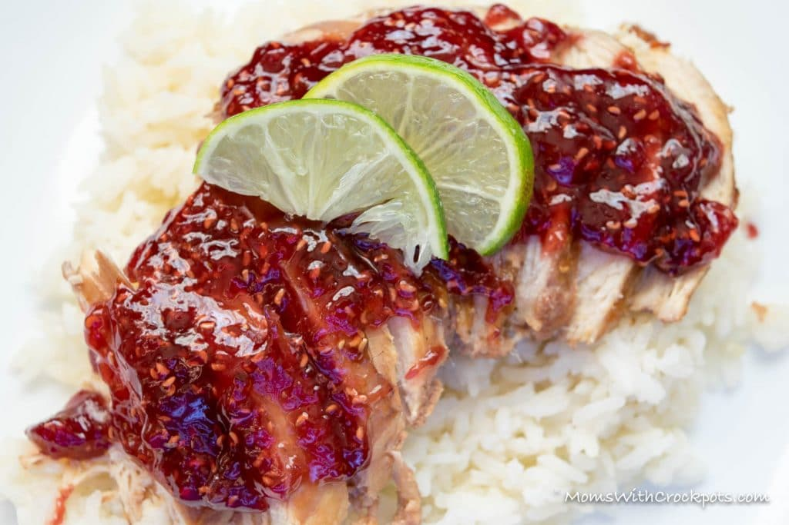

Raspberry Chicken

This raspberry chicken recipe makes a tasty meal with hot cooked rice or a small pasta, such as orzo or ditalini. Or serve the chicken with another grain, like farro, quinoa, or couscous. Add cooked spinach or broccoli for a fabulous meal. Or slice the cooked chicken and arrange it on fresh spinach leaves with thinly sliced red onions. Drizzle some of the sauce over the chicken.
Ingredients!
- 4 boneless chicken breast halves
- 3 ounces balsamic vinaigrette, purchased or homemade
- 2 cups fresh red raspberries
- 1/4 cup raspberry jam
- 2 tablespoons sherry vinegar, or red wine vinegar, or white wine vinegar
- 1/2 teaspoon dried tarragon, crumbled
- 1/2 teaspoon salt
- 1/8 teaspoon freshly ground black pepper
Steps!
- Put chicken breast halves between sheets of plastic wrap; gently pound to flatten to an even thickness. If the chicken breasts are large, slice them in half horizontally to make cutlets.
- Sprinkle with salt and pepper; drizzle or brush with balsamic vinaigrette. Cover and refrigerate.
- Clean the raspberries and put a few aside for garnish. In a saucepan, combine berries, jam, vinegar, tarragon, 1/2 teaspoon salt, and 1/8 teaspoon pepper. Bring to a boil.
- Reduce heat to low and simmer for about 5 minutes, stirring frequently. Let cool slightly.
- Spoon about 2 to 3 tablespoons of the sauce into a bowl, then strain the remaining raspberry sauce through a fine mesh strainer into the same bowl. Keep warm or refrigerate the sauce and warm it up when ready to serve.
- Grill chicken pieces over medium coals for about 3 minutes on each side, or until cooked through. Alternatively, pan grill or broil the chicken breasts.
- Arrange the chicken on a platter or individual plates. Spoon raspberry sauce over the chicken pieces and garnish with some fresh berries, if desired.